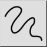
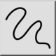
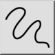
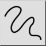

Ligne à main levée
Barre d'outil / icône :
 

Menu : Dessin > Ligne > Ligne à main levée
Raccourci : L, F
Commandes : linefree | freehand | lf
Ceci est une traduction automatique.
Barre d'outil / icône :
 

Menu : Dessin > Ligne > Ligne à main levée
Raccourci : L, F
Commandes : linefree | freehand | lf
Avec cet outil, vous pouvez dessiner des lignes à main levée. Cet outil
n'est généralement utilisé qu'avec parcimonie car les dessins techniques
exigent une précision absolue. Cependant, à certaines occasions, cet outil peut
s'avérer utile, par exemple pour les bords cassés comme ici :